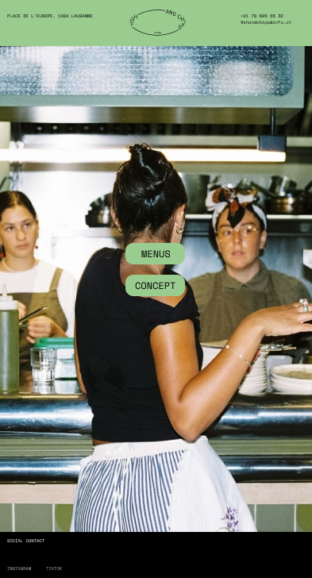
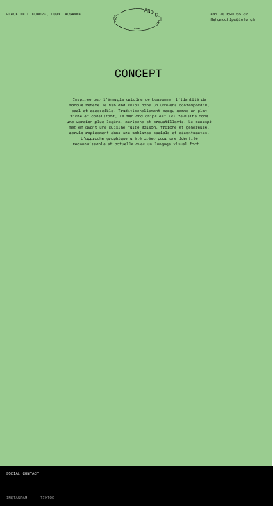
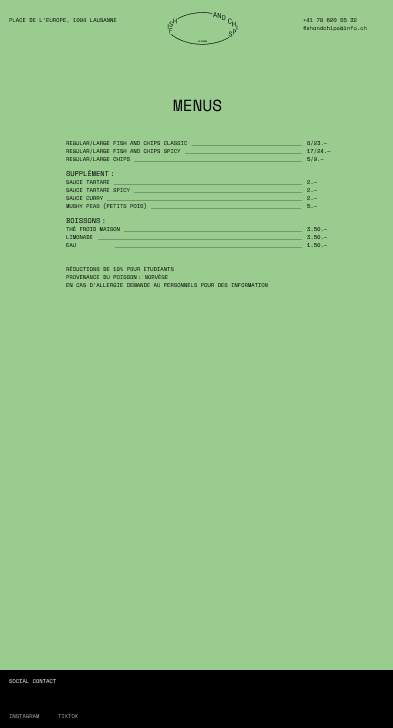

Application

Font:
Fish and Chips --font-size-XS 0.50rem; / 8px The quick brown fox jumps over the lazy dog
Fish and Chips --font-size-S 0.71rem; / 11.32px The quick brown fox jumps over the lazy dog
Fish and Chips --font-size-M 1.00rem; / 16px The quick brown fox jumps over the lazy dog
Fish and Chips --font-size-L 1.41rem; / 22.62px The quick brown fox jumps over the lazy dog
Fish and Chips --font-size-XL 2.00rem; / 32px The quick brown fox jumps over the lazy dog
Fish and Chips --font-size-XXL 2.83rem; / 45.23px The quick brown fox jumps over the lazy dog
Fish and Chips --font-size-XXXL 4.00rem; / 60.44px The quick brown fox jumps over the lazy dog
Fish and Chips --font-size-XXXL 5.65rem; / 90.44px The quick brown fox jumps over the lazy dog
Fish and Chips --font-size-XXXXL 8.00rem; / 128px The quick brown fox jumps over the lazy dog
Maquette site web
Page d'acceuil

Page concept

Page menu
